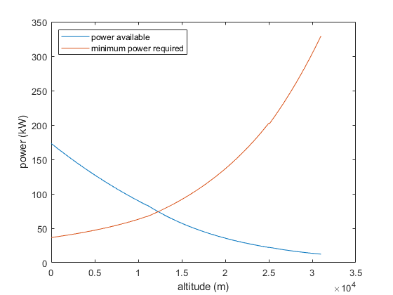

Astart = 0;
Astop = 31;
Astep = Astop / .1;
altitudes = linspace(Astart,Astop,Astep);
temperatures = zeros(1,Astep);
pressures = zeros(1,Astep);
densities = zeros(1,Astep);
speedsofsound = zeros(1,Astep);
Ialtitudes = zeros(1,Astep);
R = .286;
Gamma = 1.4;
G = 9.81;
pressure = 101325;
gradient = 1;
referenceA = 0;
referenceP = 0;
referenceR = 0;
for x = (1:Astep)
altitude = altitudes(x);
if(altitude >= 0 && altitude <= 11)
temperature = 288.16 + altitude * -6.5;
gradient = 1;
referenceA = 0;
referenceP = 101325;
referenceR = 1.225;
referenceT = 288.16;
a = -6.5;
end
if(altitude > 11 && altitude <= 25)
temperature = 216.66;
gradient = 0;
referenceA = 11;
referenceP = 22700;
referenceT = temperature;
end
if(altitude > 25)
temperature = 216.66 + (altitude - 25) * 3;
gradient = 1;
referenceA = 25;
referenceP = 2527.3;
referenceR = 0.040639;
referenceT = 216.66;
a = 3;
end
temperatures(x) = temperature;
speedsofsound(x) = sqrt((Gamma * R * temperature) * 1000);
if(gradient)
pressures(x) = referenceP * (temperature / referenceT) ^ ((-G) / (a * R));
else
pressures(x) = referenceP * exp(-(G / (R * temperature)) * (altitude - referenceA));
end
densities(x) = pressures(x) / (R * temperatures(x) * 1000);
Ialtitudes(x) = altitudes(x) * 1000;
end
K = 0.054;
M = 1315;
S = 16.3;
CD0 = 0.026;
P0 = 216;
eta = 0.8;
mad = 0.6;
powermin = zeros(1,Astep);
poweravail = zeros(1,Astep);
for y = (1:Astep)
poweravail(y) = (densities(y) / 1.225)^ mad * P0 * eta;
powermin(y) = 4 / 3 *sqrt((2 * (M * G)^3) / (densities(y) * S) * sqrt(3 * K^3 * CD0));
powermin(y) = powermin(y) / 1000;
end
plot(Ialtitudes,poweravail,Ialtitudes,powermin);
legend("power available", "minimum power required");
legend('location','northwest');
xlabel("altitude (m)");
ylabel("power (kW)");
